Inside an LST module (6/28/06).
Yours truly doing plateau curve testing on the second round of LSTs before installation (6/28/06).
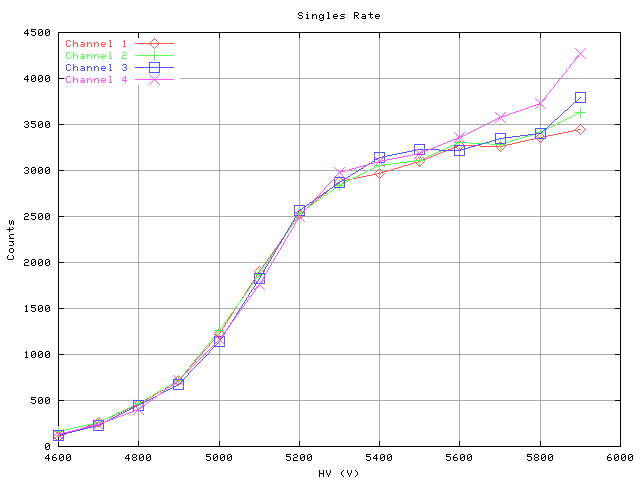
A singles rate plateau curve from measurements of 100 s of cosmics per data point. Notice the nice plateau around 5500 V (June 2006).
Here are the front-end (FE) boards used to measure the plateau curves (6/28/06).
A view of the LST modules being tested in CEH (6/28/06).
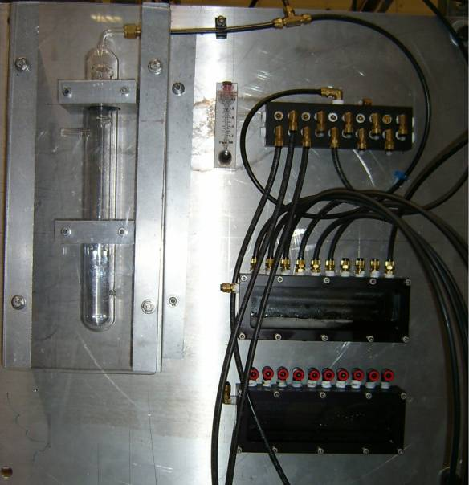
LST gas bubblers. The big one on the left regulates the pressure. The others measure the flow rate by counting the bubbles. Seriously. (6/28/06)
The high voltage (HV) cables await plugging into the power sources atop the electronics hut (EH) (9/8/06).
The LST HV power supplies are located atop the EH, travelling under the roof's flooring before coming out the back and spilling down the back wall of the EH. Here Malcom Lewis is adjusting the red HV cables for sextants 1 & 4 which were installed in 2004 while Mark Convery watchs on. The cabling was rather sloppily done, so it had to be redone before we could put in the HV cables for the other 4 sextants into the tray (8/31/06).
The LST cables spill down the EH wall at left and across the floor under where a walkway normally is. The sandbags at left are on top of a concrete block from the curtain wall the shields us from BaBar's radiation when the beam is on (8/31/06).

A view of BaBar's curtain wall in place, early August 2006. The EH is in the foreground.
The current location of the concrete blocks from BaBar's curtain wall on the roadside outside IR-2 (9/13/06).
Then the cables go under where the curtain wall will be and under the walkway inside the curtain wall before going up the rotated tray at left. Some cables also go under the BaBar detector. Since the LSTs are a late fix to replace the ailing RPCs we have to fit cables where we can (8/31/06).
Next the cables go up the aforementioned cable tray to the side of the BaBar detector (8/31/06).
And the up along te side of the detector (8/31/06)
The original plan was to take all the cables for the four new sextants up this way so we removed the two gray wire boxes you see here to make room. Alas, it was still not enough (8/31/06).
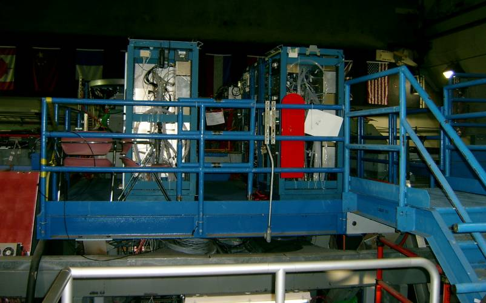
A view of the platform atop the BaBar detector (8/31/06).
Valley of the cables, atop BaBar. The LST cables run along the right side of the valley. To the right some of the DIRC electronics are visible (8/31/06).
A closer view, where one can see the small red LST cables go into the detector under the plastic flap (8/31/06).
A week later two more sextants' worth of cables are running down the EH wall which Kyle Knoepfel is tieing to the cable tray (9/8/06).
The HV cables were made extra long since it wasn't clear where around the detector exactly they would fit. This means that the extra cable length has to go somewhere, so a wide tray was added under the EH for this purpose. Only small people can fit underneath though, and I am not a small person (9/8/06).
As mentioned earlier the route originally chosen for the cables turned out not to be big enough, so we decides to run the cables for sextant 3 through these silver conduits under the detector from the east side. A tech named Gibson is the only fellow who will fit, so he fed it through to Ryan White and me on the other side (9/8/06).
The sextant 3 cables on the other (west) side of BaBar (9/8/06).
|
Here is my teeny workspace for cablepulling on the west side (9/8/06). |
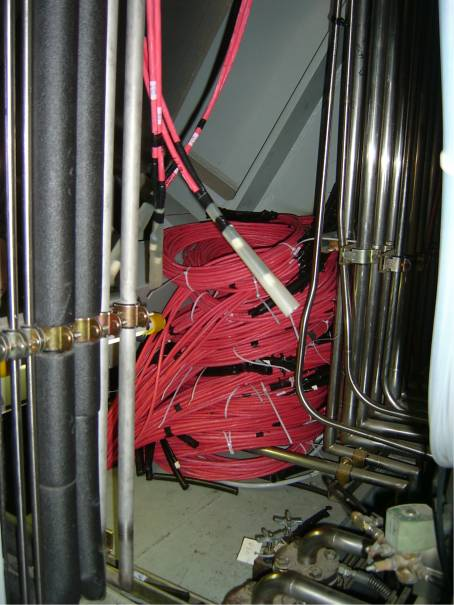 And now with all 18 layers' cables (9/13/06). |
And here is where the sextant 3 cables will go (9/8/06).
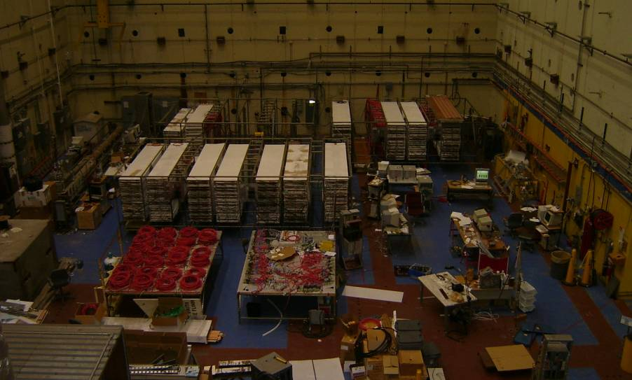
CEH is starting to look empty as the modules get moved up top to take down the hill to BaBar. We just removed all those HV cables sitting coiled on the table (9/8/06).
Inside of the instrumented flux return (IFR), which the upper 3 sextants of are clearly visible in this picture, is where the LST are going. They slide nicely into those little slats. However, to slide them into the southern side of the detector seen here, support pieces for the inner subsystems like the DIRC had to be removed and replaced with this center piece bolted on and supported from above (9/15/06).
Here's what it looked like a week before (9/8/06).
A closer look at sextants 2 (top) and 3 (bottom) on the west side of BaBar. Note that the RPCs have been removed from sextant three (9/15/06).
See, you can see clear through to the other side (9/15/06).
A third cable tray had to be installed to take the extra slack from the cables of sextants 0 and 5. The cable tray visible to the left holds the cables of sextants 2 & 3, whereas further to the left off frame is a the tray holding cables from sextants 1 & 4 installed in 2004 (9/15/06).
The LST modules from sextant 3 are getting all packed up and prepared in CEH for their transport over to IR-2 (9/14/06).
This is being done on the ground floor above the pit and Phillipe Grenier is overseeing it (9/14/06).
A few final tests are in order just before the transfer. Quoth Phillipe, "We must be sure." (9/15/06)
The cablewinding in CEH was also completed in record time with the help of an electric cablewinder. Malcom clued us dumb physicists into this wonderful piece of equipment - we had been doing it by hand before! (9/14/06)
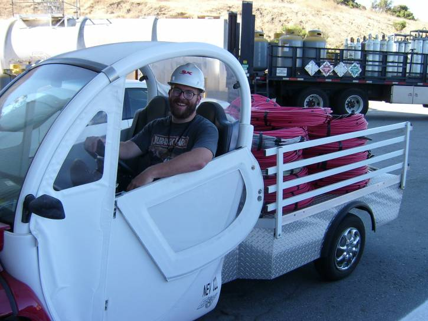
The cables, bundled by layer, were transported over to IR-2 in the clown car. Here's your's truly with the sextant 0 cables (9/15/06).
There's now a walkway across the top of BaBar. The LST bubblers (née RPC bubblers) which measure the gas flow are at left. The electronics for the humidity and temperature sensors are on the other side (9/15/06).
The bubbler up close. At top is the visual bubbler, an led circuit actually counts the number of bubbles to measure the flow. Below that are the flowmeters, and more visual bubblers at the bottom. Each layer of each setxant has a left and a right bubbler (9/15/06).

The apparatus for installing LST modules, staged in IR-2 early August 2006.
... and by sextant 3 (9/19/06).
Oreos watch the sun rise on the hill overlooking IR-2 (9/19/06).
The z-planes for sextant 3 are brought over from CEH on a flatbed truck (9/19/06).
The z-planes are then put in before the LST modules (9/19/06).
Visible from the backend of BaBar are the brass layers put in to increase the mass that the muons travel through since the LST modules are mostly gas (9/20/06).
Here is a thermocouple . . . on a stiiiick!
I have been put in charge of the temperature and humidity sensors. Mostly we are trying to recycle the ones which were used for the RPCs like this one here. Actually there are two thermocouples on this meter long stick, one to sit at the edge of the barrel region and one to sit a meter inside it. More information is available on the humidity & temperature sensor page. (9/19/06)
The electronics for the reused RPC temperature sensors (10/5/06).
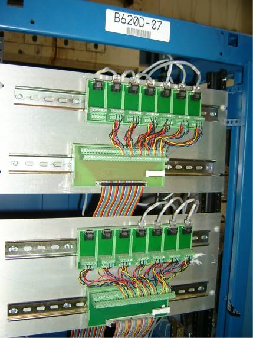
The electronics for the newer LST temperature & humidity sensors (9/19/06).
Those rainbow cables above feed into the general monitoring boards (GMBs) pictured here (9/19/06).
The last HV cables were run to sextant 5 down this wireway (9/20/06).
With all the cabling finished the wireway on the back of EH is full, so we closed it up, since they are high voltage after all.
Pictured here finishing the job is Tae Hong (9/20/06).
RULZ
The first LST modules for sextant 3 arrive in IR-2 (9/20/06).
Sextant 3, layer 18 is safely inserted into BaBar (9/20/06).
The Experimental Physics and Industrial Control System (EPICS) is used to monitor the temperature and humidity sensors. Here is the humidity/temperture sensors installed in the RPCs in the two endcaps and the barrel. The two remaining in the barrel will be removed and put back along with others during the LST installation, whereas those in the endcaps will remain there along with the RPCs. (9/21/06)
The sensors in sextants 1 & 4 are available in EPICS already since these modules were installed in 2004 (9/21/06).
The first humidity sensor is placed in sextant 3 of layer 18. It is the small white cylinder between the two large bolt holes (9/21/06).
Here is the appartus built to test the humidity sensors several at a time. A General Monitoring Board (GMB), designed to be used in many of BaBar's hardware applications, is powered by a DC converter and then sends 5 volts out to each humidity sensor. A linear drop in the return voltage across two different circuits gives the humidity and temperature at the sensor, which is a Honeywell HIH-3602-A (9/21/06).
Connecting the humidity sensor to the GMB.
A completed sextant 3 - note the six shiny brass layers interleaved to add extra mass (9/26/06).
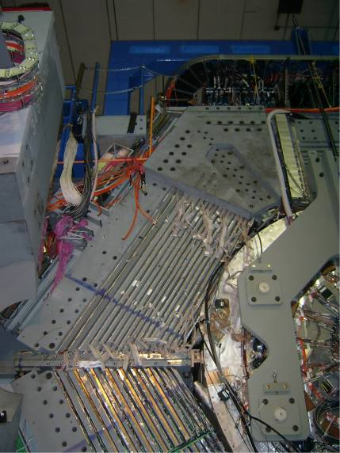
Removing the supports on sextant 2 ... (9/27/06)
Empty boxes are all that's left at CEH after sextant 3 was installed in BaBar (9/26/06).
Building the humidity sensor housings for several new humidity sensors, I got pretty good at soldering and crimping (9/27/06).
One of 8 completed humidity sensor cables I built (9/27/06).
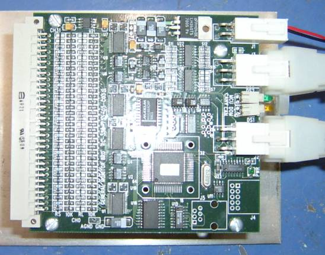
A General Monitoring Board (GMB).
Installation of Layer 2 is under way (10/3/06).
The wireway on the back of EH is all closed up (10/3/06).
The sextant 5 HV lines await the modules to plug into (10/3/06).
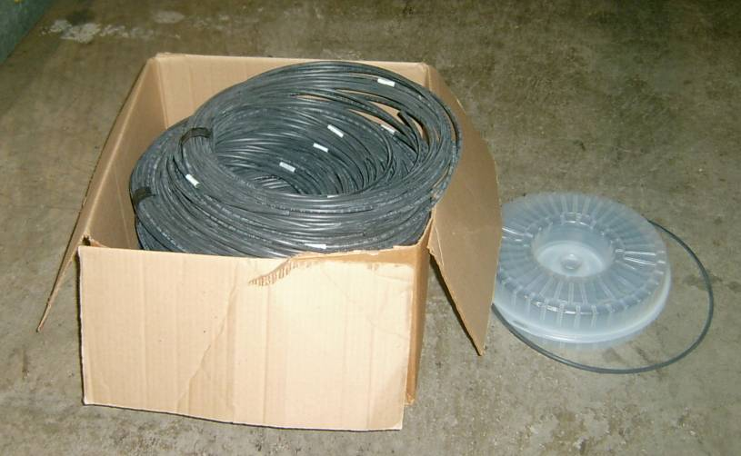
Gas lines being prepared in CEH (10/3/06).
CEH continues to empty (10/3/06).
A sextant 2 module is lifted over to the insertion area (10/5/06).
The powering of the low voltage (LV) sensors (like the temp/humidity sensors) for the LSTs in EH (10/5/06).
Re-orginized DIN rails for the humidity sensors (10/5/06).
The missing humidity sensors discovered! (10/5/06)
A single day of rain brings mud from the LCLS excavation down to IR-2 (10/5/06).
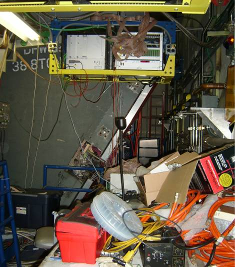
The HV readout electronics are on the eastern side (10/14/6).
The brass is in and we're ready to install sextant 5 (10/25/06).
Every day there are fewer LST modules in CEH (10/25/06).
"200 gas lines make a big mess" quoth Ryan White,
who is in charge of installing the LST gas system (10/25/06).
The flatbed truck is ready in CEH to take another load of modules over to IR-2 (10/25/06).
The new humidity sensor lines ready to be tested by my nearby rusty, trusty laptop (10/25/06).
Alas, the steel plates were installed on the backward end of sextant 2 ahead of schedule
- making it rather tough to put the humidity sensors in (10/25/06).
Ryan White with the now well-organized gas lines (10/25/06).
Now the forward end is accessable on the east side only because the westside door is fully open for the sextant 5 & 0 installations (11/2/06).
The eastside frontend door had to be partially closed to allow this accessability (11/2/06)
The apparatus setup for the installation of sextant 0 (11/2/06).
The completed humidity sensor electronics (11/2/06).
Apparently the gas line folks take a pride in their work similar to that of the the cablerunners. What could the common factor be? Hmmmm.... (11/3/06)
The placement of the humidity sensor in sextant 5 layer 1 (11/3/06).
CEH is almost empty (11/8/06).
Placement of the sextant 2 layer 17 humidity sensor (11/8/06).
Placement of the sextant 2 layer 1 humidity sensor (11/8/06).
The EPICS display including all of the sextants (11/9/06)